I nostri guardiani della porta
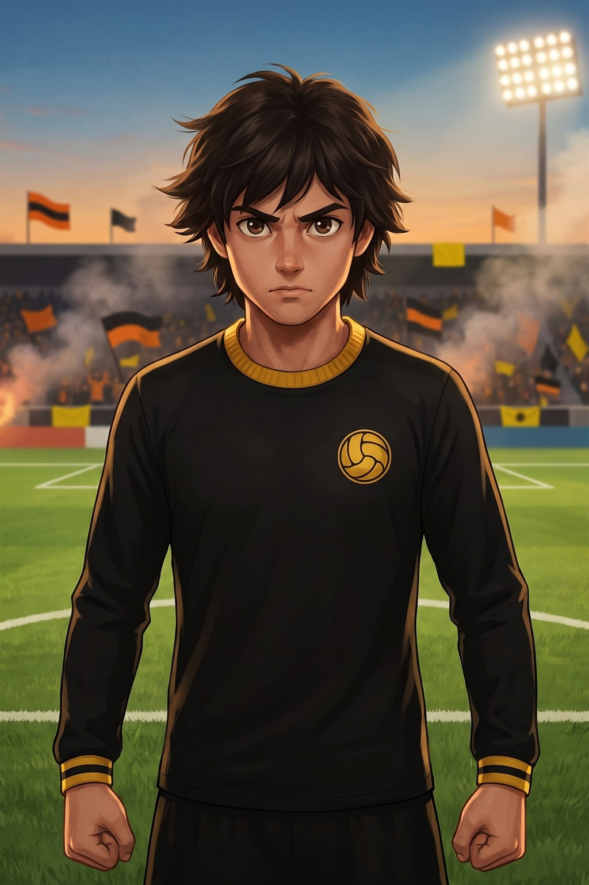
tommy-bond-0045
Franco-Toscano mix pazzo tra i pali. Testa fra le nuvole, miracoli e caciarate "Tommy, sei sveglio?"
Uniti verso la vittoria
I nostri guardiani della porta

Franco-Toscano mix pazzo tra i pali. Testa fra le nuvole, miracoli e caciarate "Tommy, sei sveglio?"
La nostra roccaforte difensiva
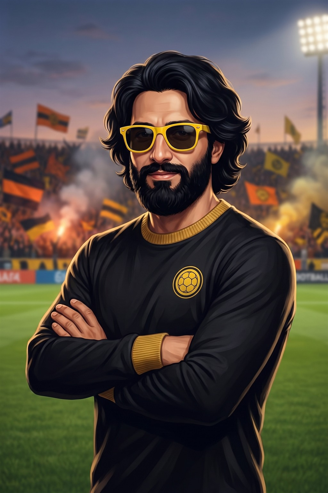
IL GENERALE 🎖️ DC roccioso e di esperienza, quando non è in zona di guerra a combattere scorpioni. Nel 2025 scambia ancora la skill Ball Roll per il BonRoll. Ignoranza brutale. SPAZZALA DANI'
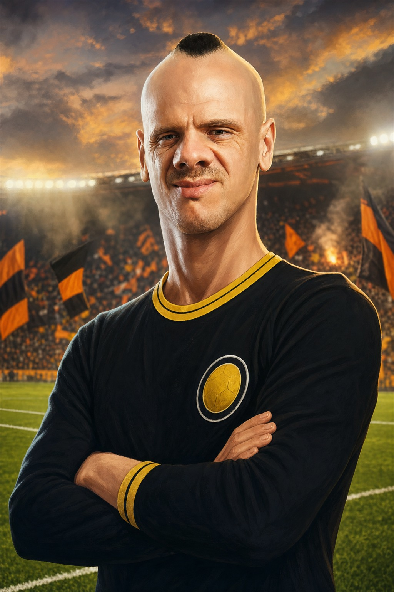
IL CLONE 👥 Difensore aggressivo La Nemesi del Capitano Non servono parole per descriverlo. Sale in attacco, e puntualmente segna o fa segnare. Sembra di essere in un video de @ilvostrocarodexter BOMBER PER CASO! 🥅
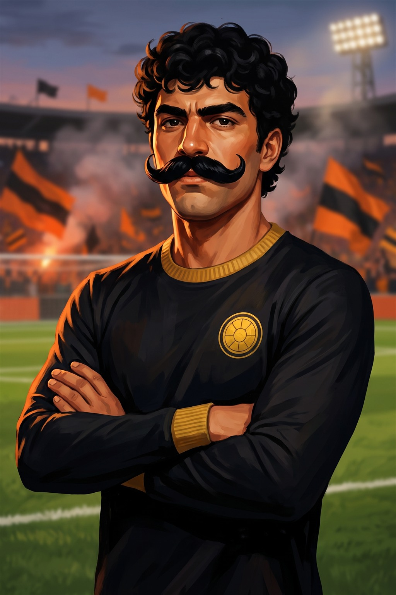
Sul lato Sinistro della Difesa 🇵🇪 Un uomo una skill interrotta Un baffo ormai divenuto ICONICO! Incubo per gli attaccanti (quando non è all'Olimpico) EN MISSION ♨️
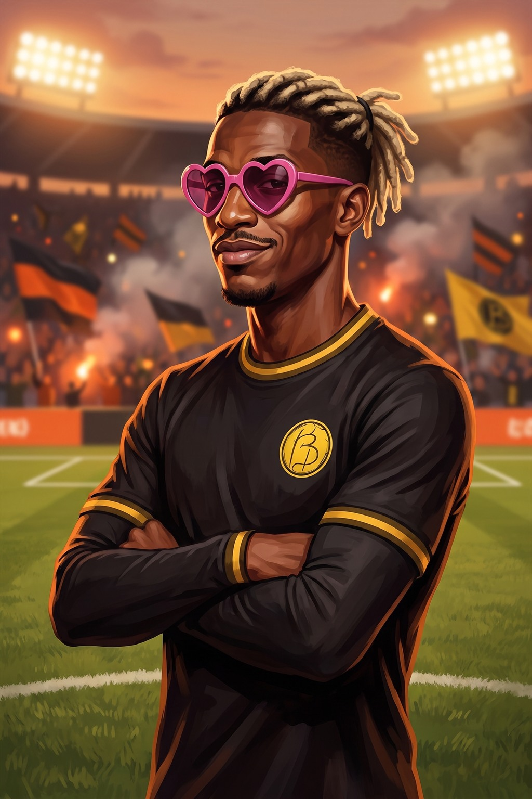
L'incognita 🥸 Il Jolly che può farti vincere le partite e i campionati o farti dannare l'esistenza.. Non si sa mai se gioca Incubo totale (davanti allo specchio, ma non della porta) C'è chi ancora non ha mai visto il suo vero volto Leggende metropolitane di un essere senza volto LET HIM COOK 🍝🥘
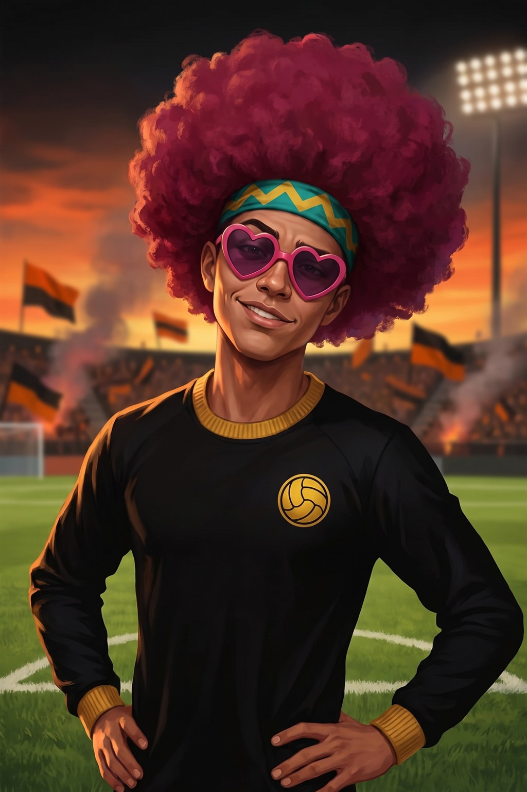
DC ingombrante Corso in nostro soccorso sempre,ha fatto il vero mostro, una montagna insormontabile. Il quasi sempre presente VETERANO IN ELUDO
Il motore pulsante della squadra
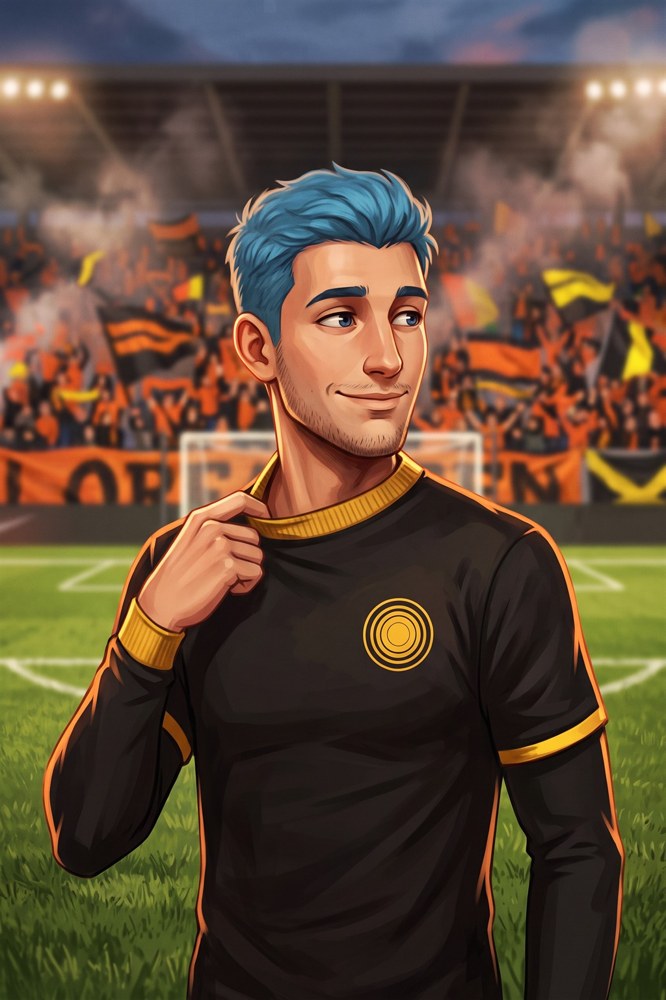
LO SCUGNIZZO 🌋💙 Visione (specialmente per gli oggetti di valore) Passaggi, intercetta tutto, anche le monetine lanciate dal pubblico di casa, una sicurezza per gli amici e una minaccia per i turisti in zona Mergellina. L'unico Napoletano sano, quando non ha la luna storta. Sempre al nostro fianco, lo scimmiotto, non ha mai deluso! Anema e core dei Monaci
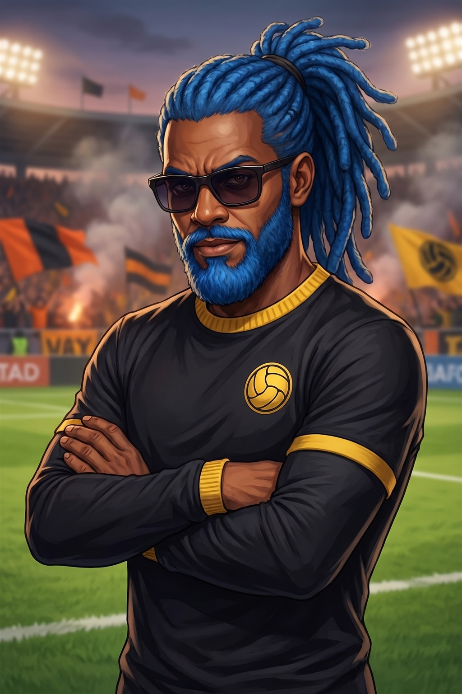
MARIO VANNI 🖤 Centrocampista sulla Sinistra Sempre ultra presente, punizioni atomiche e carattere. Trivele provate sempre dai posti più impensabili.. Si fa tutta la fascia alla velocità della luce! In poche parole un fas***ta.. Mario Vanni sempre in prima linea e con la camicia stirata RITORNEREMO! 👔
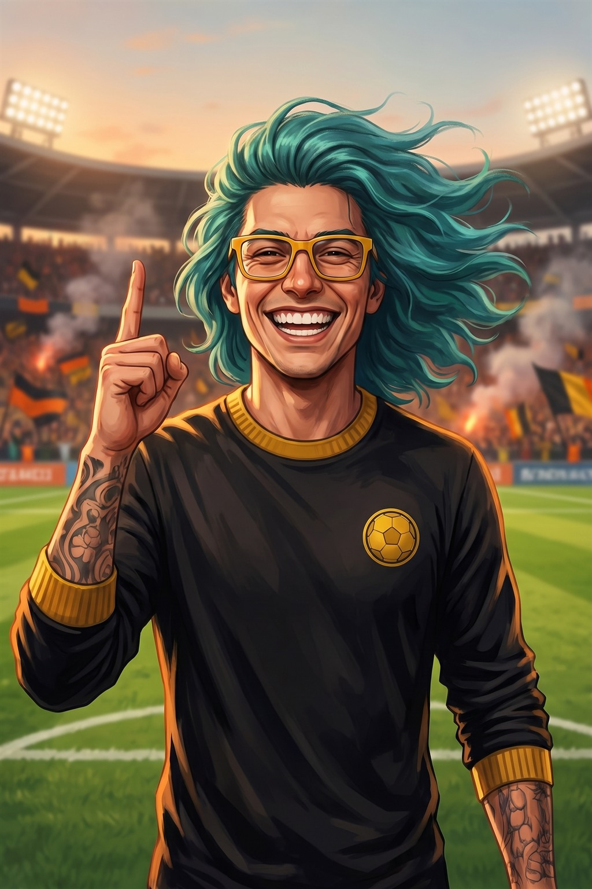
LO STIRATO 🎰 Se c'è una persona che possa essere presa d'esempio per descrivere a pieno il CC perfetto è lui. Una Visione che OCCHIO di Sauron spostati. Tra gli impegni del suo amato Bologna e del Basket lui c'è e ci sarà sempre dentro e fuori dal campo. Stile infinito, classe ed eleganza, cuore e carattere. Il nostro gigante buono rimane punto cardine del centrocampo. THE KING OF SOCCMEL ❤️💙
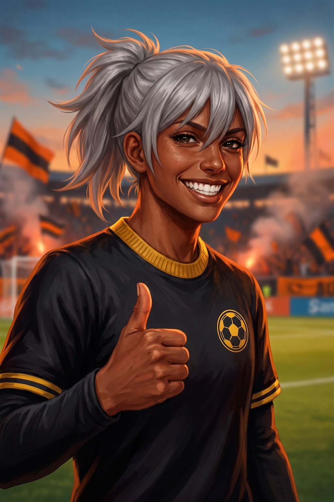
Centrocampista completo. Tenta 6 trivele a partita. Cambia più capelli che mutande. Spiccano dalle sue caratteristiche elevate doti di passaggio, skill e 15-0 sfiorati. Tecnico dentro e fuori dal campo
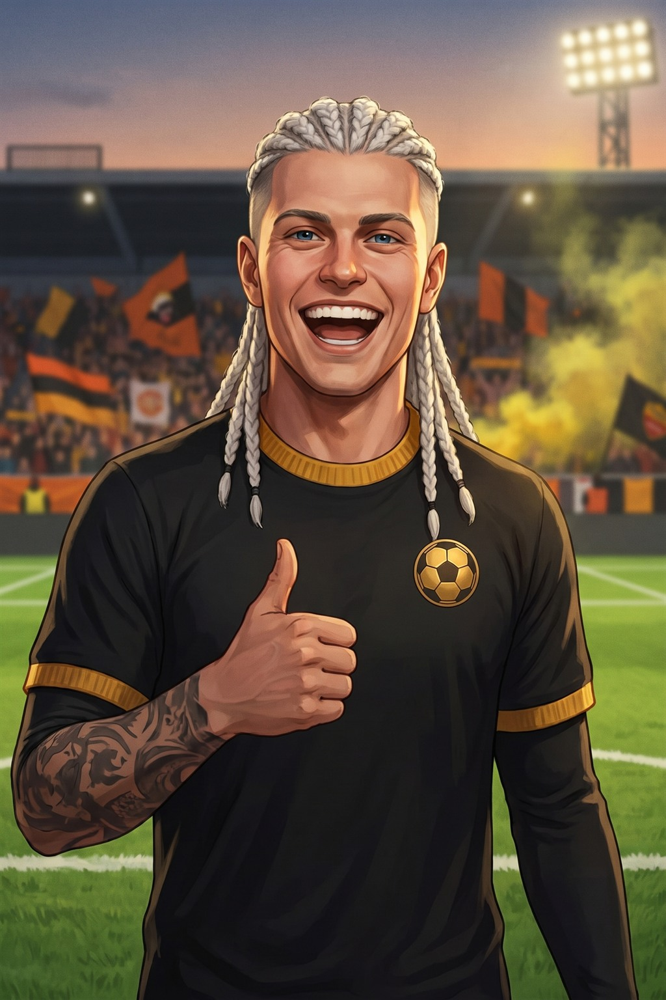
CECIO 🧆 Jolly sulla fascia! Sulla fascia Destra alterna fase offensiva e difensiva. Ottimo aiuto in caso si bisogno. Player dal cuore d'oro e dalla forte costanza e presenza
Le nostre frecce letali
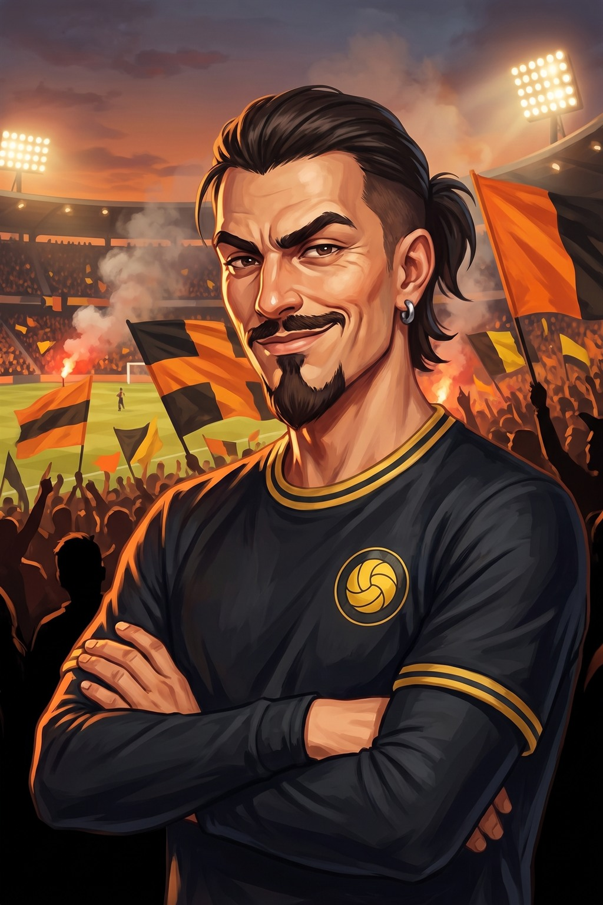
IL CAPITANO 🐺 Ragazzi è l'anima della squadra, se ogni stagione vinciamo o saliamo in competizioni un motivo ci sarà! Continuate a seguirlo se la vostra strada è quella per la vittoria e soprattutto per chi crede nel gruppo Monaci. Ci siamo fatti un nome in 2 anni di competitive. Tutto nasce da questa mente. In campo che dire: assistman e gol a valanga nonostante sia una seconda punta. Sempre disponibile ad ascoltare tutti ( non gli fate finire però la pazienza) Onorate il cap così come si venera il Dio del Football! ... e andremo lontani "INSIEME" ❤️🧡💛🖤 UN CAPITANO! C'È SOLO UN CAPITANO 🗣️🔊
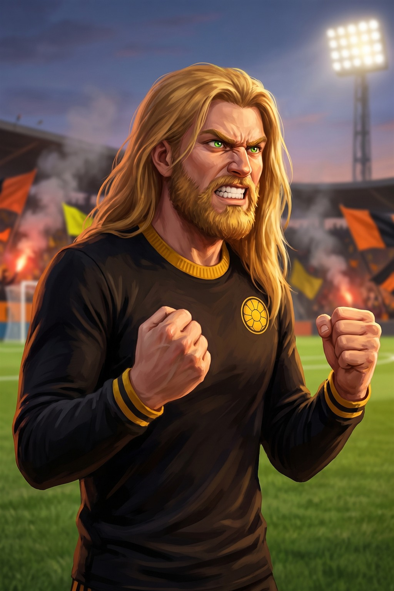
MARIAN ZAHARIA 🔪💥 Il nostro Bomber storico di razza! Con il suo protocollo scivolata-cartellino rosso non è mai arrivato al lvl 100. La puzza di piedi ha invaso le nostre cuffie per mesi Onore al Vichingo Rumeno ⚔️ Lo Zingaro per eccellenza.. Il vero BOMBER 🥅 IL DEMONE DI BARICELLA 👺🇷🇴🦶🏻
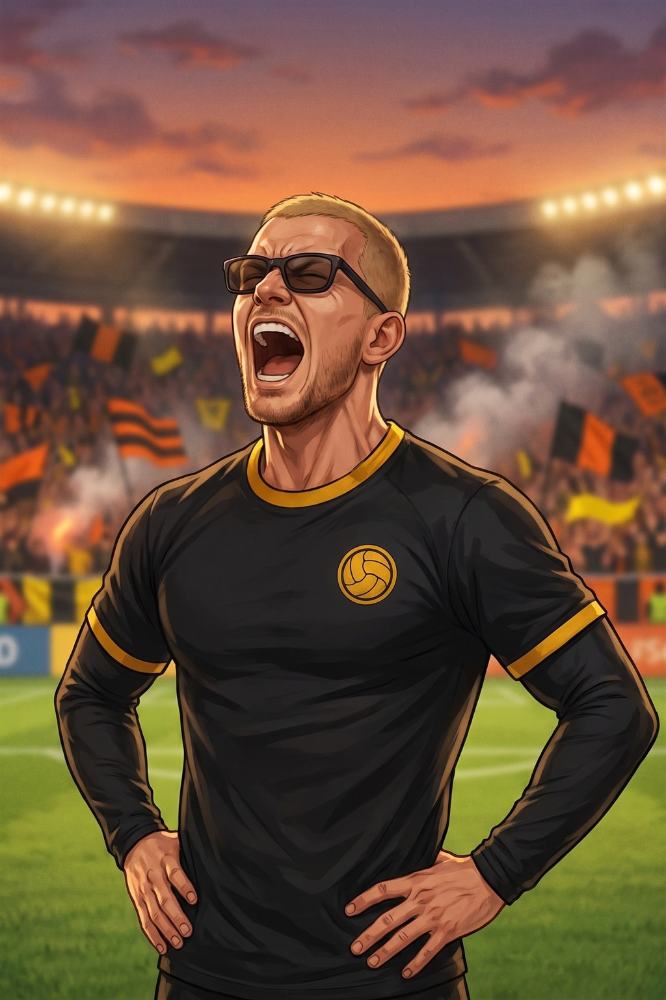
IL CIGNO 🦢💥 Arrivato a metà stagione nel 2025 ha subito voluto far capire di che pasta fosse fatto (sicuramente pasta di mandorle). Con la sua foga, la sua fame, i suoi driven, la sua intelligenza tattica e la sua ambizione, non c'è stato verso per le difese avversarie. Arriva e si prende la scarpa d'oro di FVPA Serie A! Quando non è allo stadio o al campo, sempre l'unica certezza in campo: Il gol te lo deve fare. Con lui nasce il trio ARMAGEDDON 🔥
Le leggende e i maestri che guidano il nostro cammino
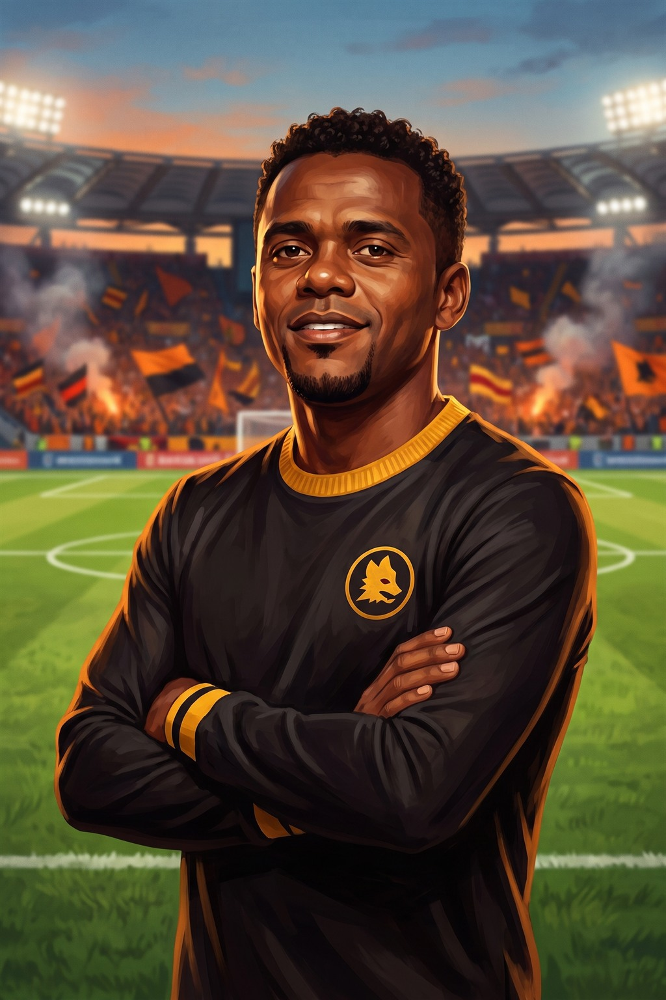
Fabio Simplicio 🍂 Esterno rapidissimo, buggatissimo e con un innato senso della difesa. Membro attivo assiduamente dal 2020. Membro onorario e Senatore a vita. Se non fosse per lui il club non sarebbe mai diventato quello che è! Grazie a quest'uomo i Monaci Shaolin hanno gettato le basi nel mondo del Competitive. Giocatore che pesa 40kg da bagnato, la freccia nera, con la sua esultanza a foglia secca,le sue premonizioni, i suoi tiri dalla distanza e i suoi interventi difensivi, sarà sempre ricordato dal club per il suo spirito di squadra e cuore d'oro. Attendiamo un suo ritorno un giorno: "Ritorno al Futuro" 🔙 BAMBACIONE 🍔 "Mi dite Simplicio, Simplicio..fate giocare Simplicio".
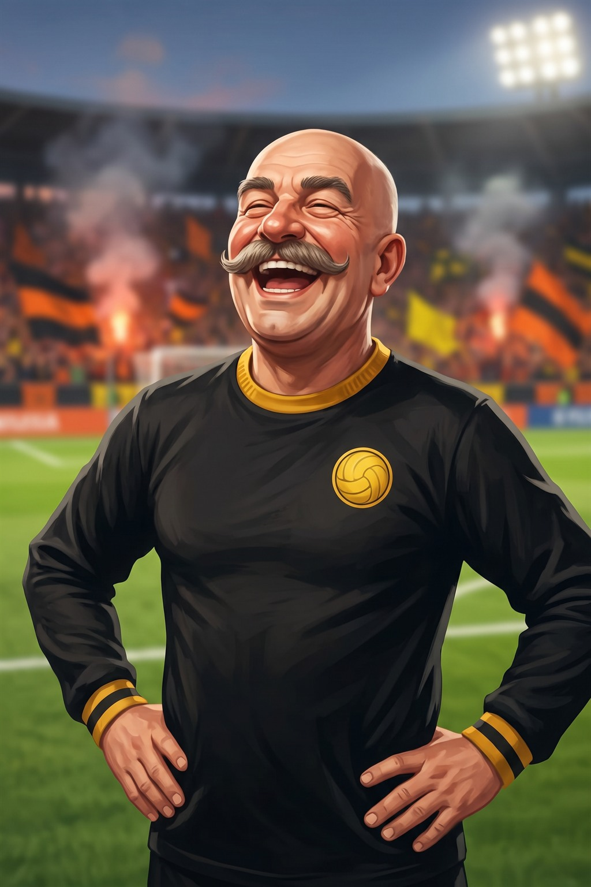
UBALDO UBALDO 🥸 L'uomo dalle mille sfaccettature e capigliature! Questo anziano COC è la vera leggenda del Club. Membro onorario e Senatore. Fin dagli albori della creazione del team nel 2018 lui è stato presente e costante. Una creatura dal potenziale divino ✝️ Ha il potere di evocare San Pietro Il nostro rematore di gondole Veneziano è un portento, nella visione e nella costruzione del gioco e amante del bel calcio. Ormai stanco di sfornare assist si è ritirato nel suo paese in cerca di pace..per ora 👀 Onore alla celebre esultanza REMATORA! Evento unico nel suo genere, solo pochi eletti lo hanno potuto gustare dal vivo.🚣🏻 LEGGENDA VIVENTE 🪶 📖
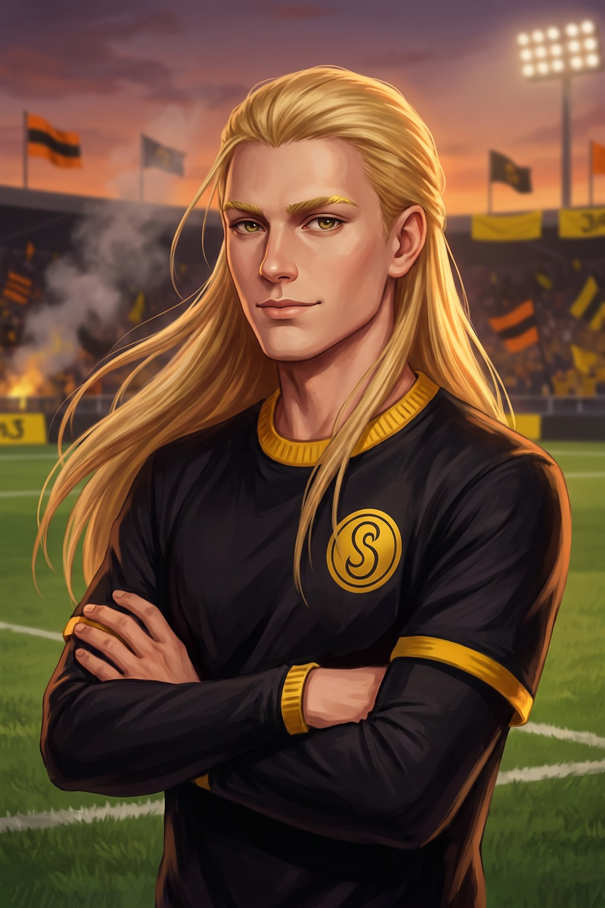
LEGOLAS VERDEFOGLIA 🏹🍃 Leggenda del Club e Senatore. Viene da terre lontane e boschi fantastici, a Latina, vicino Campo Boario per intenderci. COC dall'incredibile visione e grande finalizzatore. Membro onorario del Club dalla creazione nel lontano 2018. Si ricordano le sue gesta e le sue imprese per la vittoria della Divisione 1 in 4 player con full CPU. A volte si trasforma nei suo alter ego Gennaro Esposito, Beppe Vessicchio e Giovanni Motrombo, quando deve correre in aiuto a fare il Jolly. Una Freccia in mezzo al campo e incitatore per i compagni di squadra. "Legolas!! Cosa vedono i tuoi occhi da elfo?" 👀
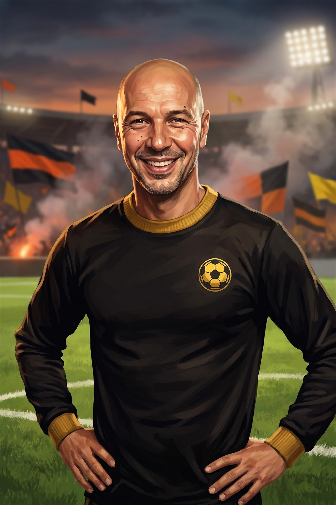
AJEJE BRAZORF 🧱↪️🇩🇪 Honorable Mention per il Maestro! Il mago dei German Cross 🪄 Uno dei TS migliori della storia del Club e non solo! Terzino dall'innato posizionamento difensivo,e dall'astuta visione di gioco. Verranno sempre ricordate le sue sovrapposizioni, incursioni e i cross germanici micidiali per servire Marian Zaharia nei tornei! Un vero e proprio MURO! Non il più skillato, è vero, ma quello con più classe di tutti! Sempre presente, a patto che non ci sia LA MAGGGICA in TV! 🐺💛❤️ Verrà sempre ricordato dai suoi compagni di squadra per i pochi anni passati insieme, ma anni di grande qualità! Tornerà mai? Non ci è dato saperlo per ora.. Noi ci crediamo ancora, chissà, forse un giorno Il Maestro farà ritorno e ci insegnerà il prossimo passo per arrivare al suo livello. Semplicemente, IL MAGISTER 🧑🏻🏫✨